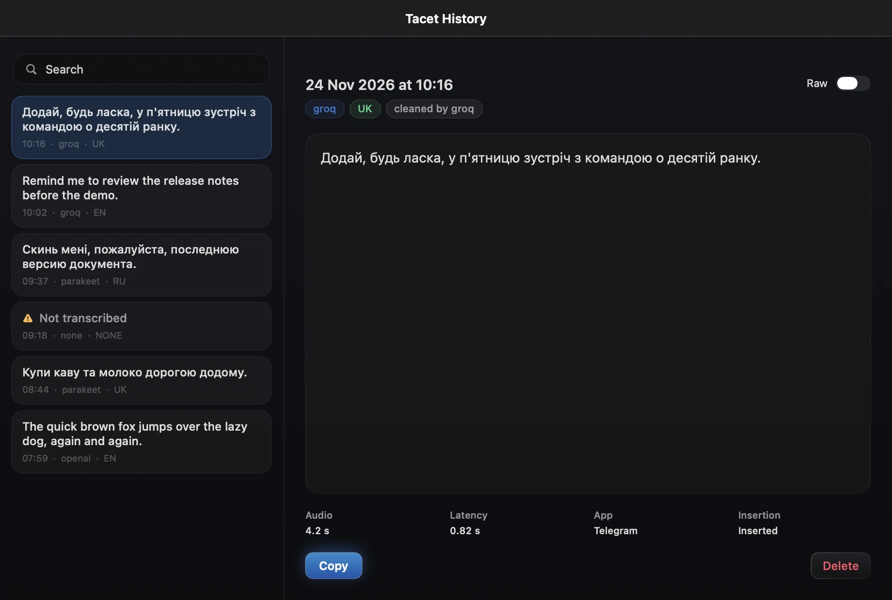

Voice dictation for Mac
Dictate where you type.
Hold the right Command key, speak, then let go. Tacet puts your words into the chat, email or document you already have open.
Free download · 16–17 MB · macOS 14+ · Apple silicon and Intel

I’ll send the summary tomorrow
I’ll send the summary tomorrow.
These are ready-made examples. The Mac app uses your microphone when you dictate.
Watch Tacet in action
See how a spoken sentence becomes text in the app you have open.



Write and edit with your voice
Answer a chat, write an email or get a first draft down without leaving the app you’re using.
Speak the language you need
Dictate a chat message in one language and your next email in another. Tacet can detect the language each time, so you can keep going without changing settings.
Tell Tacet what to change
Select a sentence and say “Make this shorter,” “Make it friendlier,” or “Translate this into Spanish.” Set up a text service once to make these changes with your voice.
Speak in one language, send in another
Choose a language for your reply and connect a text service. Tacet can translate your dictation before putting it into the app you’re using.
Dictate offline after setup
Download Parakeet in Tacet’s settings to recognize speech on your Mac, or connect an online speech service. Rewriting and translation use the text service you choose.
Find your words again
Look up your dictation in History. Tacet also restores what you had copied before it put the new text into your app.
Get started on Mac
Download the file for your Mac and drag Tacet into Applications. Choose how Tacet should recognize your voice, then allow microphone access and let Tacet insert text into other apps using Accessibility settings.
arm64.dmgx86_64.dmg